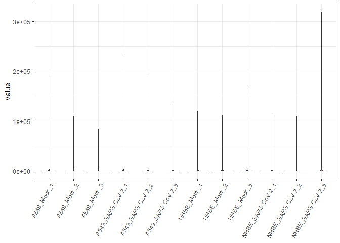

This package is a toolkit that can be concieved as a wrapper for functions and utilities that I use repeatedly across projects and collaborations involving omics data analysis. Particularly, it makes use of the core functions from packages such as limma, edgeR and fgsea to automate processes as the statistical comparison and functional analysis of omics data.
Installation
The package can be installed through the install_github() function from devtools.
library(biokit)## Warning: replacing previous import 'dplyr::select' by 'AnnotationDbi::select'
## when loading 'biokit'
## Warning: replacing previous import 'AnnotationDbi::select' by 'dplyr::select'
## when loading 'biokit'
knitr::opts_chunk$set(
fig.path = "man/figures/"
)
data("sarsCovData")
data("humanHallmarks")Filter and normalize counts
sarsCovMat <- sarsCovMat[rowSums(sarsCovMat) >= 15, ]
tmmMat <- countsToTmm(sarsCovMat)Plot value distribution per sample
biokit::violinPlot(tmmMat)
PCA plot
biokit::pcaPlot(mat = tmmMat, sampInfo = sarsCovSampInfo, groupCol = "group")
Heatmap of the top 25 most variable genes
heatmapPlot(mat = tmmMat, sampInfo = sarsCovSampInfo, groupCol = "group",scaleBy = "row", nTop = 25)
Perform differential expression analysis
diffRes <- biokit::autoLimmaComparison(mat = tmmMat, sampInfo = sarsCovSampInfo, groupCol = "group")Visualize results with a volcano plot
biokit::volcanoPlot(diffRes)
Perform functional analysis with GSEA
gseaResults <- gseaFromStats(df = diffRes, funCatList = humanHallmarks, rankCol = "logFc", splitCol = "comparison")## Warning in preparePathwaysAndStats(pathways, stats, minSize, maxSize, gseaParam, : There are ties in the preranked stats (2.2% of the list).
## The order of those tied genes will be arbitrary, which may produce unexpected results.
## Warning in preparePathwaysAndStats(pathways, stats, minSize, maxSize, gseaParam, : There are ties in the preranked stats (0.58% of the list).
## The order of those tied genes will be arbitrary, which may produce unexpected results.
## Warning in preparePathwaysAndStats(pathways, stats, minSize, maxSize, gseaParam, : There are ties in the preranked stats (0.43% of the list).
## The order of those tied genes will be arbitrary, which may produce unexpected results.
## Warning in preparePathwaysAndStats(pathways, stats, minSize, maxSize, gseaParam, : There are ties in the preranked stats (0.73% of the list).
## The order of those tied genes will be arbitrary, which may produce unexpected results.
## Warning in preparePathwaysAndStats(pathways, stats, minSize, maxSize, gseaParam, : There are ties in the preranked stats (0.42% of the list).
## The order of those tied genes will be arbitrary, which may produce unexpected results.
## Warning in preparePathwaysAndStats(pathways, stats, minSize, maxSize, gseaParam, : There are ties in the preranked stats (4.55% of the list).
## The order of those tied genes will be arbitrary, which may produce unexpected results.And plot enriched hallmarks
gseaPlot(gseaResults)
Session information
## R version 4.0.5 (2021-03-31)
## Platform: x86_64-w64-mingw32/x64 (64-bit)
## Running under: Windows 10 x64 (build 19042)
##
## Matrix products: default
##
## locale:
## [1] LC_COLLATE=English_United Kingdom.1252
## [2] LC_CTYPE=English_United Kingdom.1252
## [3] LC_MONETARY=English_United Kingdom.1252
## [4] LC_NUMERIC=C
## [5] LC_TIME=English_United Kingdom.1252
##
## attached base packages:
## [1] stats graphics grDevices utils datasets methods base
##
## other attached packages:
## [1] biokit_0.1.1
##
## loaded via a namespace (and not attached):
## [1] locfit_1.5-9.4 Rcpp_1.0.6
## [3] lattice_0.20-41 tidyr_1.1.3
## [5] assertthat_0.2.1 digest_0.6.27
## [7] utf8_1.2.1 R6_2.5.0
## [9] GenomeInfoDb_1.26.4 stats4_4.0.5
## [11] RSQLite_2.2.5 evaluate_0.14
## [13] highr_0.8 ggplot2_3.3.3
## [15] pillar_1.5.1 zlibbioc_1.36.0
## [17] rlang_0.4.10 data.table_1.14.0
## [19] blob_1.2.1 S4Vectors_0.28.1
## [21] Matrix_1.3-2 rmarkdown_2.7
## [23] labeling_0.4.2 BiocParallel_1.24.1
## [25] stringr_1.4.0 pheatmap_1.0.12
## [27] RCurl_1.98-1.3 bit_4.0.4
## [29] munsell_0.5.0 fgsea_1.16.0
## [31] DelayedArray_0.16.3 compiler_4.0.5
## [33] xfun_0.22 pkgconfig_2.0.3
## [35] BiocGenerics_0.36.0 htmltools_0.5.1.1
## [37] tidyselect_1.1.0 SummarizedExperiment_1.20.0
## [39] tibble_3.1.0 gridExtra_2.3
## [41] GenomeInfoDbData_1.2.4 edgeR_3.32.1
## [43] IRanges_2.24.1 matrixStats_0.58.0
## [45] fansi_0.4.2 crayon_1.4.1
## [47] dplyr_1.0.5 bitops_1.0-6
## [49] grid_4.0.5 gtable_0.3.0
## [51] lifecycle_1.0.0 DBI_1.1.1
## [53] magrittr_2.0.1 scales_1.1.1
## [55] stringi_1.5.3 cachem_1.0.4
## [57] farver_2.1.0 XVector_0.30.0
## [59] limma_3.46.0 ggfortify_0.4.11
## [61] ellipsis_0.3.1 generics_0.1.0
## [63] vctrs_0.3.7 fastmatch_1.1-0
## [65] RColorBrewer_1.1-2 tools_4.0.5
## [67] bit64_4.0.5 Biobase_2.50.0
## [69] glue_1.4.2 purrr_0.3.4
## [71] MatrixGenerics_1.2.1 parallel_4.0.5
## [73] fastmap_1.1.0 yaml_2.2.1
## [75] AnnotationDbi_1.52.0 colorspace_2.0-0
## [77] GenomicRanges_1.42.0 memoise_2.0.0
## [79] knitr_1.31